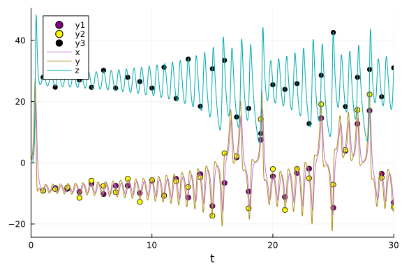
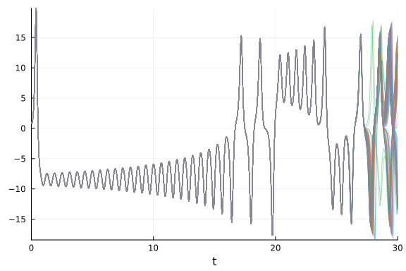
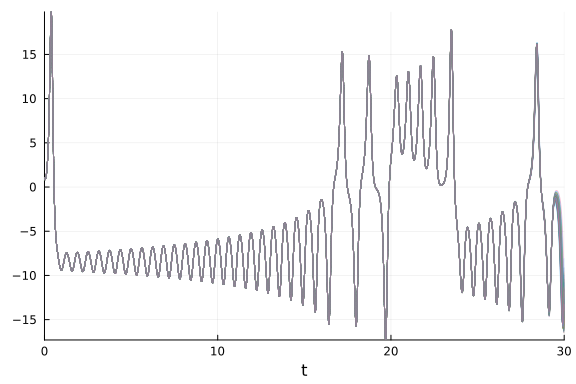
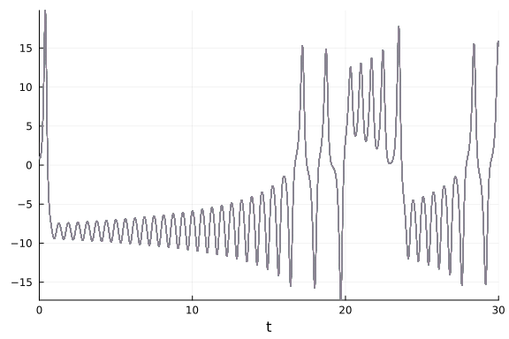

Lorenz Bayesian Parameter Estimation Benchmarks
Parameter estimation of Lorenz Equation using DiffEqBayes.jl
using DiffEqBayes
using DiffEqCallbacks, StaticArrays
using Distributions, StanSample, DynamicHMC, Turing
using OrdinaryDiffEq, RecursiveArrayTools, ParameterizedFunctions, DiffEqCallbacks
using Plots, LinearAlgebra"""Print elapsed sampling time and the Turing chain."""
function display_ess_per_sec(chain, elapsed)
println("Elapsed time: $(round(elapsed; digits=2)) seconds")
display(chain)
end
# Distributions requires a vector mean; sol[:, i] can be a scalar after ODE 7.
_mvn(u, σ) = MvNormal(
let n = length(σ)
μ = u isa AbstractVector ? collect(float.(u)) : [float(u)]
length(μ) == n ? μ : fill(μ[1], n)
end,
Diagonal(σ .^ 2),
)
"""Extract and display Stan's internal timing from its CSV output files."""
function display_stan_timing(stan_result)
sample_files = stan_result.model.sample_file
for (chain_idx, f) in enumerate(sample_files)
isfile(f) || continue
lines = readlines(f)
println("Chain $chain_idx timing (from Stan CSV):")
for line in lines
if startswith(line, "#") && occursin("Elapsed Time", line)
println(" ", strip(line[2:end]))
elseif startswith(line, "#") && occursin("seconds", line)
println(" ", strip(line[2:end]))
end
end
end
endMain.var"##WeaveSandBox#277".display_stan_timinggr(fmt = :png)Plots.GRBackend()Initializing the problem
g1 = @ode_def LorenzExample begin
dx = σ*(y-x)
dy = x*(ρ-z) - y
dz = x*y - β*z
end σ ρ βMain.var"##WeaveSandBox#277".LorenzExample{Main.var"##WeaveSandBox#277".var
"###ParameterizedDiffEqFunction#279", Main.var"##WeaveSandBox#277".var"###P
arameterizedTGradFunction#280", Main.var"##WeaveSandBox#277".var"###Paramet
erizedJacobianFunction#281", Nothing, Nothing, ModelingToolkitBase.System}(
Main.var"##WeaveSandBox#277".var"##ParameterizedDiffEqFunction#279", Linear
Algebra.UniformScaling{Bool}(true), nothing, Main.var"##WeaveSandBox#277".v
ar"##ParameterizedTGradFunction#280", Main.var"##WeaveSandBox#277".var"##Pa
rameterizedJacobianFunction#281", nothing, nothing, nothing, nothing, nothi
ng, nothing, nothing, [:x, :y, :z], :t, nothing, Model ##Parameterized#278:
Equations (3):
3 standard: see equations(##Parameterized#278)
Unknowns (3): see unknowns(##Parameterized#278)
x(t)
y(t)
z(t)
Parameters (3): see parameters(##Parameterized#278)
σ
ρ
β, nothing, nothing)r0 = [1.0; 0.0; 0.0]
tspan = (0.0, 30.0)
p = [10.0, 28.0, 2.66]3-element Vector{Float64}:
10.0
28.0
2.66prob = ODEProblem(g1, r0, tspan, p)
sol = solve(prob, Tsit5())retcode: Success
Interpolation: specialized 4th order "free" interpolation
t: 355-element Vector{Float64}:
0.0
3.5678604836301404e-5
0.0012320942519312387
0.00556932465348067
0.012366524722957406
0.021160814850103675
0.033296251971569796
0.04900115478366526
0.06936892249678134
0.09517047537763844
⋮
29.383016799571845
29.460494075076628
29.540306930513268
29.625471076888655
29.723135438241798
29.805484193360808
29.910086909807717
29.99928302640111
30.0
u: 355-element Vector{Vector{Float64}}:
[1.0, 0.0, 0.0]
[0.9996434557625105, 0.0009988049817849054, 1.7814349300524496e-8]
[0.9879653604576064, 0.03426824324278913, 2.0964175442932688e-5]
[0.9500089426818266, 0.1514709435028955, 0.00040920017142123774]
[0.9033877560315204, 0.32596836188271083, 0.001892216392693151]
[0.8639680997970994, 0.5392700815038988, 0.005168731067070007]
[0.8433235120785849, 0.8199540219704273, 0.0119181078390778]
[0.8665761894886946, 1.178060982280894, 0.024523932292864075]
[0.9699424017971061, 1.6684270372332624, 0.04902023715188545]
[1.2120261198364632, 2.3949595105940595, 0.10071541720535906]
⋮
[-11.953731623976742, -8.724911172152208, 34.75350663343156]
[-8.414218124478245, -3.3997394618081014, 32.42494675534079]
[-5.095020000229003, -2.072653537110552, 27.39746410268826]
[-3.578767653386599, -2.916342234602008, 22.594599695010295]
[-3.9132937007923942, -5.183232333060949, 18.662230583885023]
[-5.62219113490472, -8.549611643866369, 17.379536103765123]
[-9.796979599919887, -14.53093015590858, 21.494882238678578]
[-13.15432518607142, -14.732570431860434, 31.42586687218547]
[-13.165446107264613, -14.689326774867084, 31.504660801755886]sr0 = SA[1.0; 0.0; 0.0]
tspan = (0.0, 30.0)
sp = SA[10.0, 28.0, 2.66]
sprob = ODEProblem{false, SciMLBase.FullSpecialize}(g1, sr0, tspan, sp)
sol = solve(sprob, Tsit5())retcode: Success
Interpolation: specialized 4th order "free" interpolation
t: 355-element Vector{Float64}:
0.0
3.5678604836301404e-5
0.0012320942519312387
0.00556932465348067
0.012366524722957406
0.021160814850103675
0.033296251971569796
0.04900115478366526
0.06936892249678134
0.09517047537763844
⋮
29.383016896164897
29.460494173696
29.540307024777988
29.62547117109964
29.72313561053084
29.805484348246978
29.91008712510907
29.99928320804487
30.0
u: 355-element Vector{StaticArraysCore.SVector{3, Float64}}:
[1.0, 0.0, 0.0]
[0.9996434557625105, 0.0009988049817849054, 1.7814349300524496e-8]
[0.9879653604576064, 0.03426824324278913, 2.0964175442932688e-5]
[0.9500089426818266, 0.1514709435028955, 0.00040920017142123774]
[0.9033877560315204, 0.32596836188271083, 0.001892216392693151]
[0.8639680997970994, 0.5392700815038988, 0.005168731067070007]
[0.8433235120785849, 0.8199540219704273, 0.0119181078390778]
[0.8665761894886946, 1.178060982280894, 0.024523932292864075]
[0.9699424017971061, 1.6684270372332624, 0.04902023715188545]
[1.2120261198364632, 2.3949595105940595, 0.10071541720535906]
⋮
[-11.953728707099234, -8.724903559414773, 34.75350730511037]
[-8.414213772728967, -3.399736204270524, 32.42494152319427]
[-5.0950176680667125, -2.0726539133804285, 27.39745893707636]
[-3.5787673480301443, -2.9163438983419585, 22.594595712232938]
[-3.9132960668681473, -5.183237769500962, 18.66222616103544]
[-5.622195731286272, -8.549619474241986, 17.379536947095986]
[-9.796989656834683, -14.530940358320164, 21.4949007487875]
[-13.154327787595237, -14.732559461298061, 31.42588636022459]
[-13.165445843155602, -14.689326671922553, 31.50466026912453]Generating data for bayesian estimation of parameters from the obtained solutions using the Tsit5 algorithm by adding random noise to it.
t = collect(range(1, stop = 30, length = 30))
sig = 0.49
data = convert(Array, VectorOfArray([(sol(t[i]) + sig*randn(3)) for i in 1:length(t)]))3×30 Matrix{Float64}:
-9.14835 -8.23278 -8.51706 -9.50314 … 17.0277 -3.56849 -12.9914
-9.07908 -8.59098 -8.07856 -11.4592 22.325 -4.86675 -14.5158
27.9219 24.6945 28.1824 27.0757 30.4947 21.5681 31.0471Plots of the generated data and the actual data.
Plots.scatter(t, data[1, :], markersize = 4, color = :purple)
Plots.scatter!(t, data[2, :], markersize = 4, color = :yellow)
Plots.scatter!(t, data[3, :], markersize = 4, color = :black)
plot!(sol)
Uncertainty Quantification plot is used to decide the tolerance for the differential equation.
cb = AdaptiveProbIntsUncertainty(5)
monte_prob = EnsembleProblem(prob)
sim = solve(
monte_prob, Tsit5(), trajectories = 100, callback = cb, reltol = 1e-5, abstol = 1e-5)
plot(sim, vars = (0, 1), linealpha = 0.4)
cb = AdaptiveProbIntsUncertainty(5)
monte_prob = EnsembleProblem(prob)
sim = solve(
monte_prob, Tsit5(), trajectories = 100, callback = cb, reltol = 1e-6, abstol = 1e-6)
plot(sim, vars = (0, 1), linealpha = 0.4)
cb = AdaptiveProbIntsUncertainty(5)
monte_prob = EnsembleProblem(prob)
sim = solve(
monte_prob, Tsit5(), trajectories = 100, callback = cb, reltol = 1e-8, abstol = 1e-8)
plot(sim, vars = (0, 1), linealpha = 0.4)
priors = [truncated(Normal(10, 2), 1, 15), truncated(Normal(30, 5), 1, 45),
truncated(Normal(2.5, 0.5), 1, 4)]3-element Vector{Distributions.Truncated{Distributions.Normal{Float64}, Dis
tributions.Continuous, Float64, Float64, Float64}}:
Truncated(Distributions.Normal{Float64}(μ=10.0, σ=2.0); lower=1.0, upper=1
5.0)
Truncated(Distributions.Normal{Float64}(μ=30.0, σ=5.0); lower=1.0, upper=4
5.0)
Truncated(Distributions.Normal{Float64}(μ=2.5, σ=0.5); lower=1.0, upper=4.
0)Using Stan.jl backend
Lorenz equation is a chaotic system hence requires very low tolerance to be estimated in a reasonable way, we use 1e-8 obtained from the uncertainty plots. Use of truncated priors is necessary to prevent Stan from stepping into negative and other improbable areas.
We use adapt_delta = 0.85 (Stan's default) consistently across all backends for a fair comparison. Stan infers a separate noise parameter per data dimension (3 for the 3D Lorenz system).
@time bayesian_result_stan = stan_inference(
prob, :rk45, t, data, priors;
solve_kwargs = Dict(:reltol => 1e-8, :abstol => 1e-8),
sample_kwargs = Dict(:delta => 0.85),
vars = (DiffEqBayes.StanODEData(), InverseGamma(2, 3)))2064.897022 seconds (4.93 M allocations: 241.337 MiB, 0.00% gc time, 0.18%
compilation time)
2095.474265 seconds (33.86 M allocations: 1.658 GiB, 0.01% gc time, 0.77% c
ompilation time: 2% of which was recompilation)
1000×6 DataFrame
Row │ sigma1.1 sigma1.2 sigma1.3 theta_1 theta_2 theta_3
│ Float64 Float64 Float64 Float64 Float64 Float64
──────┼─────────────────────────────────────────────────────────
1 │ 9.31404 9.83929 6.31923 7.81197 25.2561 3.06298
2 │ 9.5899 15.1526 5.88629 6.64315 27.1026 3.03173
3 │ 8.17258 8.78723 6.76619 7.36959 25.494 3.08235
4 │ 9.13084 11.8492 6.62972 7.02878 26.1218 3.07485
5 │ 8.68947 12.1115 7.85402 7.16402 26.3514 3.03244
6 │ 8.86705 10.1451 5.75638 6.92142 26.2709 3.05641
7 │ 10.7161 8.9779 5.74279 6.7533 26.6664 3.05203
8 │ 10.9826 8.84515 5.37899 6.43376 26.5738 3.07436
⋮ │ ⋮ ⋮ ⋮ ⋮ ⋮ ⋮
994 │ 9.69705 10.6606 6.43414 9.08225 23.875 2.59269
995 │ 9.53075 10.6971 6.44794 8.86853 23.8922 2.61459
996 │ 9.53861 10.7861 6.45101 8.90186 23.879 2.60616
997 │ 9.3838 10.747 6.36069 9.05061 23.8402 2.6185
998 │ 9.4536 10.7193 6.53798 8.93658 23.8769 2.60478
999 │ 9.39031 10.6314 6.51438 9.01562 23.8401 2.5964
1000 │ 9.4162 10.5785 6.48813 9.0344 23.8559 2.59592
985 rows omittedStan's internal timing (excluding data serialization and CSV parsing):
display_stan_timing(bayesian_result_stan)Chain 1 timing (from Stan CSV):
Elapsed Time: 1364.99 seconds (Warm-up)
695.923 seconds (Sampling)
2060.91 seconds (Total)Direct Turing.jl
We use per-dimension noise parameters (matching Stan) with InverseGamma(2, 3) priors on each σ.
@model function fitlorenz(data, prob)
# Prior distributions.
σ ~ filldist(InverseGamma(2, 3), 3)
σ_param ~ truncated(Normal(10, 2), 1, 15)
ρ ~ truncated(Normal(30, 5), 1, 45)
β ~ truncated(Normal(2.5, 0.5), 1, 4)
# Simulate Lorenz model.
p = SA[σ_param, ρ, β]
_prob = remake(prob, p = p)
predicted = solve(_prob, Vern9(); saveat = t)
# Observations.
for i in axes(data, 2)
data[:, i] ~ _mvn(predicted(t[i]), σ)
end
return nothing
end
model = fitlorenz(data, sprob)
# Warmup run to compile all code paths before timing
sample(model, Turing.NUTS(0.85), 10; progress = false)
elapsed_turing_direct = @elapsed chain = sample(model, Turing.NUTS(0.85), 10_000; progress = false)
chain╭─FlexiChain (10000 iterations, 1 chain) ──────────────────────────────────
────╮
│ ↓ iter = 1001:11000
│
│ → chain = 1:1
│
│
│
│ Parameters (4) ── AbstractPPL.VarName
│
│ Vector{Float64} σ (3,)
│
│ Float64 σ_param, ρ, β
│
│
│
│ Extras (14)
│
│ Int64 n_steps, tree_depth
│
│ Bool is_accept, numerical_error
│
│ Float64 acceptance_rate, log_density, hamiltonian_energy,
│
│ hamiltonian_energy_error, max_hamiltonian_energy_error, step_si
ze, │
│ nom_step_size, logprior, loglikelihood, logjoint
│
╰──────────────────────────────────────────────────────────────────────────
────╯display_ess_per_sec(chain, elapsed_turing_direct)Elapsed time: 6769.11 seconds
╭─FlexiChain (10000 iterations, 1 chain) ──────────────────────────────────
────╮
│ ↓ iter = 1001:11000
│
│ → chain = 1:1
│
│
│
│ Parameters (4) ── AbstractPPL.VarName
│
│ Vector{Float64} σ (3,)
│
│ Float64 σ_param, ρ, β
│
│
│
│ Extras (14)
│
│ Int64 n_steps, tree_depth
│
│ Bool is_accept, numerical_error
│
│ Float64 acceptance_rate, log_density, hamiltonian_energy,
│
│ hamiltonian_energy_error, max_hamiltonian_energy_error, step_si
ze, │
│ nom_step_size, logprior, loglikelihood, logjoint
│
╰──────────────────────────────────────────────────────────────────────────
────╯Using Turing.jl backend
@time bayesian_result_turing = turing_inference(
prob, Vern9(), t, data, priors;
sample_args = (sampler = Turing.NUTS(0.85), num_samples = 10_000),
solve_kwargs = Dict(:reltol => 1e-8, :abstol => 1e-8),
likelihood = (u, p, t, σ) -> _mvn(u, σ),
likelihood_dist_priors = [InverseGamma(2, 3), InverseGamma(2, 3), InverseGamma(2, 3)])12934.887983 seconds (27.88 G allocations: 2.022 TiB, 13.50% gc time, 0.32%
compilation time: <1% of which was recompilation)
╭─FlexiChain (10000 iterations, 1 chain) ──────────────────────────────────
────╮
│ ↓ iter = 1001:11000
│
│ → chain = 1:1
│
│
│
│ Parameters (4) ── AbstractPPL.VarName
│
│ Float64 theta[1], theta[2], theta[3]
│
│ Vector{Float64} σ (3,)
│
│
│
│ Extras (14)
│
│ Int64 n_steps, tree_depth
│
│ Bool is_accept, numerical_error
│
│ Float64 acceptance_rate, log_density, hamiltonian_energy,
│
│ hamiltonian_energy_error, max_hamiltonian_energy_error, step_si
ze, │
│ nom_step_size, logprior, loglikelihood, logjoint
│
╰──────────────────────────────────────────────────────────────────────────
────╯Using DynamicHMC.jl backend
@time bayesian_result_dynamichmc = dynamichmc_inference(
prob, Tsit5(), t, data, priors; solve_kwargs = (reltol = 1e-8, abstol = 1e-8))642.813037 seconds (251.47 M allocations: 25.055 GiB, 3.59% gc time, 1.74%
compilation time)
(posterior = [(parameters = [5.2805259263602204, 21.75464145783607, 1.56761
91098107957], σ = [8.674363716264017, 9.14288771823797, 9.80725604049732]),
(parameters = [5.261483349342364, 21.59817089686176, 1.537335146840837], σ
= [8.300698322786424, 8.192707673853803, 10.153978355432216]), (parameters
= [5.312472547115768, 21.57771050594611, 1.5184355766879174], σ = [8.33901
9659157094, 8.11663894428028, 7.047999463425523]), (parameters = [5.2134740
2168287, 21.610116771465464, 1.5702266888792353], σ = [8.197613142988223, 9
.399563591980034, 8.235025203251336]), (parameters = [5.373052040752458, 21
.642504508413477, 1.5116509433064589], σ = [6.655652627421138, 8.0249181484
31217, 7.885930862927852]), (parameters = [5.125608202531946, 21.4945772271
91463, 1.6112557342670233], σ = [6.9278871351898434, 8.110293760635816, 7.8
59971365832725]), (parameters = [5.103169290558663, 21.493186097727317, 1.6
205461288936647], σ = [6.2342503060031635, 8.069216763140235, 7.16563715580
816]), (parameters = [5.161691035169358, 21.569045992949388, 1.601216768297
6752], σ = [6.750429148987492, 8.358794266436725, 7.249106327158256]), (par
ameters = [5.0715737851218465, 21.49058252092313, 1.6190990335949744], σ =
[8.253069924508072, 8.399548860281435, 7.886414976293864]), (parameters = [
5.029396476680395, 21.551630136471978, 1.63327479242251], σ = [7.4303950241
44284, 7.941880581967548, 7.99220797669872]) … (parameters = [4.918494117
522004, 21.66844471215354, 1.6501373986444525], σ = [8.042982218574561, 7.6
68089645100168, 7.376844507420682]), (parameters = [4.923230642454039, 21.4
59436269128457, 1.652830869612861], σ = [8.075557458869403, 7.6591379107117
35, 7.398271378058213]), (parameters = [4.722559663322689, 21.9426485282182
07, 1.6712859975947254], σ = [8.078913673653425, 7.275519323654229, 7.96900
6125037583]), (parameters = [5.523784076155427, 21.524966189989087, 1.49261
27764035269], σ = [6.869541910317854, 7.617824790776843, 6.881365694865709]
), (parameters = [5.3503640450301555, 21.718759060333202, 1.52372799980608]
, σ = [7.233956913154976, 7.905704448033231, 6.4616077346871865]), (paramet
ers = [4.852044903594599, 21.776887454838914, 1.666257177829523], σ = [7.12
68714573975, 7.958401355740956, 8.684880310588618]), (parameters = [5.19983
2505967473, 21.559760289445286, 1.5710416032578967], σ = [6.734066924559345
, 7.641280667923123, 8.2674148038246]), (parameters = [5.219059621329251, 2
1.658449332016406, 1.5907527708435452], σ = [6.71522717183967, 7.6173948534
06623, 8.334204749094365]), (parameters = [5.01594190344184, 21.48008202962
5688, 1.63206819759234], σ = [7.04704917366152, 8.195789888856162, 8.945337
327916258]), (parameters = [4.396940855729647, 22.629093675974698, 1.671248
7006110233], σ = [9.373557184785295, 9.274439038384267, 6.810539137921814])
], posterior_matrix = [1.664025700022889 1.6604129925719158 … 1.61262122101
51079 1.4809090390574102; 3.079827135128354 3.072608630403662 … 3.067126088
5172495 3.119236409173737; … ; 2.2129762784810447 2.103244450534581 … 2.103
62059423255 2.2272621256277105; 2.283122524002213 2.3178655848932492 … 2.19
11324275873874 1.9184712855918986], tree_statistics = DynamicHMC.TreeStatis
ticsNUTS[DynamicHMC.TreeStatisticsNUTS(-331.6645290454653, 9, turning at po
sitions 621:628, 0.6430591158085025, 831, DynamicHMC.Directions(0xa84f9334)
), DynamicHMC.TreeStatisticsNUTS(-332.8215021508433, 8, turning at position
s -379:-442, 0.690759881501163, 511, DynamicHMC.Directions(0xb27c9a45)), Dy
namicHMC.TreeStatisticsNUTS(-333.2219617283706, 9, turning at positions -21
1:300, 0.9237055965276617, 511, DynamicHMC.Directions(0xc072cd2c)), Dynamic
HMC.TreeStatisticsNUTS(-331.3603950456891, 9, turning at positions -32:479,
0.999362286197223, 511, DynamicHMC.Directions(0x153c53df)), DynamicHMC.Tre
eStatisticsNUTS(-329.4529932449989, 10, turning at positions -129:894, 0.99
93566251264725, 1023, DynamicHMC.Directions(0x54439b7e)), DynamicHMC.TreeSt
atisticsNUTS(-329.4833158562775, 9, turning at positions -67:-74, 0.7730850
734373323, 543, DynamicHMC.Directions(0x82b755d5)), DynamicHMC.TreeStatisti
csNUTS(-329.67528154189307, 8, turning at positions 145:400, 0.998637374926
9812, 511, DynamicHMC.Directions(0x4c859990)), DynamicHMC.TreeStatisticsNUT
S(-329.8006191079967, 8, turning at positions -58:-313, 0.9949800070558823,
511, DynamicHMC.Directions(0xc69a66c6)), DynamicHMC.TreeStatisticsNUTS(-32
8.00397071869196, 10, turning at positions -669:354, 0.9936078930989654, 10
23, DynamicHMC.Directions(0xbbb7e962)), DynamicHMC.TreeStatisticsNUTS(-330.
0154042047196, 9, turning at positions -351:-862, 0.7467804921660555, 1023,
DynamicHMC.Directions(0x0f26f8a1)) … DynamicHMC.TreeStatisticsNUTS(-334.
3739773731788, 9, turning at positions -304:207, 0.9340352838117689, 511, D
ynamicHMC.Directions(0x3bd6becf)), DynamicHMC.TreeStatisticsNUTS(-330.85396
732696967, 6, turning at positions -25:-32, 0.9998532796160329, 71, Dynamic
HMC.Directions(0xafd01527)), DynamicHMC.TreeStatisticsNUTS(-335.14612873781
9, 8, turning at positions 218:221, 0.7334753017823529, 311, DynamicHMC.Dir
ections(0x2fdc8fa5)), DynamicHMC.TreeStatisticsNUTS(-330.9924687297046, 10,
turning at positions -448:575, 0.5780110863144216, 1023, DynamicHMC.Direct
ions(0x5dde4a3f)), DynamicHMC.TreeStatisticsNUTS(-330.63481984446537, 9, tu
rning at positions -164:347, 0.8481723384403713, 511, DynamicHMC.Directions
(0xb5d9795b)), DynamicHMC.TreeStatisticsNUTS(-329.620683509797, 9, turning
at positions -462:49, 0.9989879423885326, 511, DynamicHMC.Directions(0xd56e
6a31)), DynamicHMC.TreeStatisticsNUTS(-329.12159098621333, 9, turning at po
sitions -90:421, 0.9975750506590835, 511, DynamicHMC.Directions(0x37e313a5)
), DynamicHMC.TreeStatisticsNUTS(-330.181544880569, 7, turning at positions
94:97, 0.8447260391760426, 139, DynamicHMC.Directions(0x771e38d5)), Dynami
cHMC.TreeStatisticsNUTS(-331.62594855054937, 8, turning at positions 219:23
4, 0.748815423147809, 415, DynamicHMC.Directions(0x450bd14a)), DynamicHMC.T
reeStatisticsNUTS(-330.91790093767764, 10, reached maximum depth without di
vergence or turning, 0.7530250062330304, 1023, DynamicHMC.Directions(0x49fc
0fe0))], logdensities = [-330.03433574169145, -330.4234294353818, -328.3956
4520965615, -327.1356018295349, -327.99762953310363, -326.91955111306964, -
328.22040718789253, -327.18679901597534, -327.1122033955254, -327.303138683
3602 … -329.8528029587476, -329.5780533009399, -327.2385954741575, -329.0
218795686243, -328.03736644240297, -326.9728760026714, -328.04785203765715,
-328.3065131324903, -327.92092838124427, -327.24212515795404], κ = Gaussia
n kinetic energy (Diagonal), √diag(M⁻¹): [0.1671663996141425, 0.21157181913
998974, 0.08910667058938088, 0.14413983464184446, 0.1370686017324162, 0.194
49122822633683], ϵ = 0.0034061395182339214)Conclusion
Due to the chaotic nature of Lorenz Equation, it is a very hard problem to estimate as it has the property of exponentially increasing errors. Its uncertainty plot demonstrates chaotic behavior and exhibits instability for different tolerance values. We use 1e-8 as the tolerance as it makes its uncertainty small enough to be trusted in the (0,30) time span.
Appendix
These benchmarks are a part of the SciMLBenchmarks.jl repository, found at: https://github.com/SciML/SciMLBenchmarks.jl. For more information on high-performance scientific machine learning, check out the SciML Open Source Software Organization https://sciml.ai.
To locally run this benchmark, do the following commands:
using SciMLBenchmarks
SciMLBenchmarks.weave_file("benchmarks/BayesianInference","DiffEqBayesLorenz.jmd")Computer Information:
Julia Version 1.12.7
Commit 6d172b025e4 (2026-08-15 08:05 UTC)
Build Info:
Official https://julialang.org release
Platform Info:
OS: Linux (x86_64-linux-gnu)
CPU: 128 × AMD EPYC 7502 32-Core Processor
WORD_SIZE: 64
LLVM: libLLVM-18.1.7 (ORCJIT, znver2)
GC: Built with stock GC
Threads: 128 default, 1 interactive, 128 GC (on 128 virtual cores)
Environment:
JULIA_NUM_THREADS = auto
Package Information:
Status `/julia/github-runners/amdci1-1/_work/SciMLBenchmarks.jl/SciMLBenchmarks.jl/benchmarks/BayesianInference/Project.toml`
[6e4b80f9] BenchmarkTools v1.8.0
[ebbdde9d] DiffEqBayes v3.16.1
[459566f4] DiffEqCallbacks v4.19.3
[31c24e10] Distributions v0.25.131
[bbc10e6e] DynamicHMC v3.6.1
[1dea7af3] OrdinaryDiffEq v7.8.1
[65888b18] ParameterizedFunctions v5.27.0
[91a5bcdd] Plots v1.41.7
[731186ca] RecursiveArrayTools v4.5.1
[31c91b34] SciMLBenchmarks v0.2.1 [loaded: `/julia/github-runners/amdci1-1/_work/SciMLBenchmarks.jl/SciMLBenchmarks.jl/src/SciMLBenchmarks.jl` (v0.2.1) expected `/home/crackauc/.julia/packages/SciMLBenchmarks/ceJyd/src/SciMLBenchmarks.jl` (v0.2.1)]
[c1514b29] StanSample v7.10.3
[90137ffa] StaticArrays v1.9.20
⌅ [fce5fe82] Turing v0.46.1
[37e2e46d] LinearAlgebra v1.12.0
Info Packages marked with ⌅ have new versions available but compatibility constraints restrict them from upgrading. To see why use `status --outdated`And the full manifest:
Status `/julia/github-runners/amdci1-1/_work/SciMLBenchmarks.jl/SciMLBenchmarks.jl/benchmarks/BayesianInference/Manifest.toml`
[47edcb42] ADTypes v1.24.0
[14f7f29c] AMD v0.5.4
[621f4979] AbstractFFTs v1.5.0
[80f14c24] AbstractMCMC v5.16.0
[7a57a42e] AbstractPPL v0.15.5
[6e696c72] AbstractPlutoDingetjes v1.4.1
[1520ce14] AbstractTrees v0.4.5
[7d9f7c33] Accessors v0.1.45
[79e6a3ab] Adapt v4.7.0
[0bf59076] AdvancedHMC v0.8.7
[5b7e9947] AdvancedMH v0.8.10
⌅ [576499cb] AdvancedPS v0.7.2
[b5ca4192] AdvancedVI v0.7.0
[66dad0bd] AliasTables v1.1.3
[dce04be8] ArgCheck v2.5.0
[ec485272] ArnoldiMethod v0.4.0
[4fba245c] ArrayInterface v7.30.1
[4c555306] ArrayLayouts v1.12.2
[aae01518] BandedMatrices v1.12.0
[198e06fe] BangBang v0.4.9
[6e4b80f9] BenchmarkTools v1.8.0
[e2ed5e7c] Bijections v0.2.2
[76274a88] Bijectors v0.16.3
[b2a6c25c] BinaryHeaps v1.1.0
[caf10ac8] BipartiteGraphs v0.1.14
[8e7c35d0] BlockArrays v1.10.0
[70df07ce] BracketingNonlinearSolve v1.12.7
[336ed68f] CSV v0.10.17
[d360d2e6] ChainRulesCore v1.26.1
[0ca39b1e] Chairmarks v1.3.1
[9e997f8a] ChangesOfVariables v0.1.11
[944b1d66] CodecZlib v0.7.9
[35d6a980] ColorSchemes v3.31.0
[3da002f7] ColorTypes v0.12.1
[c3611d14] ColorVectorSpace v0.11.0
[5ae59095] Colors v0.13.1
⌅ [861a8166] Combinatorics v1.0.2
[38540f10] CommonSolve v0.2.14
[bbf7d656] CommonSubexpressions v0.3.1
[f70d9fcc] CommonWorldInvalidations v1.2.2
[34da2185] Compat v4.18.1
[5224ae11] CompatHelperLocal v0.1.29
[b152e2b5] CompositeTypes v0.1.4
[a33af91c] CompositionsBase v0.1.2
[2569d6c7] ConcreteStructs v0.2.8
[88cd18e8] ConsoleProgressMonitor v0.1.2
[187b0558] ConstructionBase v1.6.0
[d38c429a] Contour v0.6.3
[a8cc5b0e] Crayons v4.2.0
[9a962f9c] DataAPI v1.16.0
[a93c6f00] DataFrames v1.8.2
[864edb3b] DataStructures v0.19.6
[e2d170a0] DataValueInterfaces v1.0.0
[8bb1440f] DelimitedFiles v1.9.1
[b429d917] DensityInterface v0.4.0
[2b5f629d] DiffEqBase v7.21.0
[ebbdde9d] DiffEqBayes v3.16.1
[459566f4] DiffEqCallbacks v4.19.3
[163ba53b] DiffResults v1.1.0
[b552c78f] DiffRules v1.16.0
[a0c0ee7d] DifferentiationInterface v0.7.21
[0703355e] DimensionalData v0.30.2
[b4f34e82] Distances v0.10.12
[31c24e10] Distributions v0.25.131
[ffbed154] DocStringExtensions v0.9.5
[5b8099bc] DomainSets v0.8.1
[bbc10e6e] DynamicHMC v3.6.1
[366bfd00] DynamicPPL v0.42.12
[7c1d4256] DynamicPolynomials v0.6.8
[cad2338a] EllipticalSliceSampling v2.0.0
[4e289a0a] EnumX v1.0.7
[f151be2c] EnzymeCore v0.8.21
[e2ba6199] ExprTools v0.1.11
[55351af7] ExproniconLite v0.10.14
[411431e0] Extents v0.1.6
[c87230d0] FFMPEG v0.4.5
[7034ab61] FastBroadcast v1.4.0
[9aa1b823] FastClosures v0.3.2
[a4df4552] FastPower v1.5.0
[48062228] FilePathsBase v0.9.24
[1a297f60] FillArrays v1.17.0
[64ca27bc] FindFirstFunctions v3.2.1
[6a86dc24] FiniteDiff v2.33.0
⌅ [53c48c17] FixedPointNumbers v0.8.6
[4a37a8b9] FlexiChains v0.6.38
[1fa38f19] Format v1.3.7
⌃ [f6369f11] ForwardDiff v1.4.5
[a85aefff] FunctionMaps v0.1.2
[069b7b12] FunctionWrappers v1.1.3
[77dc65aa] FunctionWrappersWrappers v1.13.0
[d9f16b24] Functors v0.5.3
[46192b85] GPUArraysCore v0.2.0
[28b8d3ca] GR v0.73.27
⌃ [a0844989] Gamma v1.1.0
[86223c79] Graphs v1.15.0
⌅ [eafb193a] Highlights v0.5.3
[34004b35] HypergeometricFunctions v0.3.30
[3263718b] ImplicitDiscreteSolve v2.3.0
[d25df0c9] Inflate v0.1.5
[22cec73e] InitialValues v0.3.1
⌅ [842dd82b] InlineStrings v1.4.6
[18e54dd8] IntegerMathUtils v0.1.4
[85a1e053] Interfaces v0.3.2
[8197267c] IntervalSets v0.7.14
[3587e190] InverseFunctions v0.1.17
[41ab1584] InvertedIndices v1.3.1
[92d709cd] IrrationalConstants v0.2.6
[82899510] IteratorInterfaceExtensions v1.0.0
[1019f520] JLFzf v0.1.11
[692b3bcd] JLLWrappers v1.8.0
⌅ [682c06a0] JSON v0.21.4
[ae98c720] Jieko v0.2.1
[ccbc3e58] JumpProcesses v9.32.3
[ba0b0d4f] Krylov v0.10.9
[2faa5264] LHLFactorization v2.2.2
[b964fa9f] LaTeXStrings v1.4.1
[23fbe1c1] Latexify v0.16.12
[1fad7336] LazyStack v0.1.3
[1d6d02ad] LeftChildRightSiblingTrees v0.3.0
[6f1fad26] Libtask v0.9.19
[87fe0de2] LineSearch v0.1.17
[d3d80556] LineSearches v7.8.1
⌃ [7ed4a6bd] LinearSolve v5.17.1
[6fdf6af0] LogDensityProblems v2.2.0
[996a588d] LogDensityProblemsAD v1.13.1
⌅ [2ab3a3ac] LogExpFunctions v0.3.29
[e6f89c97] LoggingExtras v1.2.0
[be115224] MCMCDiagnosticTools v0.3.19
[e80e1ace] MLJModelInterface v1.12.1
[1914dd2f] MacroTools v0.5.16
[dbb5928d] MappedArrays v0.4.3
[bb5d69b7] MaybeInplace v0.1.8
[442fdcdd] Measures v0.3.3
[e1d29d7a] Missings v1.2.0
[dbe65cb8] MistyClosures v2.1.0
[961ee093] ModelingToolkit v11.42.1
⌃ [7771a370] ModelingToolkitBase v1.69.1
[6bb917b9] ModelingToolkitTearing v1.20.6
⌅ [2e0e35c7] Moshi v0.3.9
[46d2c3a1] MuladdMacro v0.2.7
[102ac46a] MultivariatePolynomials v0.5.19
[ffc61752] Mustache v1.0.21
[d8a4904e] MutableArithmetics v1.8.0
[d41bc354] NLSolversBase v8.0.1
[77ba4419] NaNMath v1.1.4
[d9ec5142] NamedTupleTools v0.14.3
[8913a72c] NonlinearSolve v4.30.0
[be0214bd] NonlinearSolveBase v2.49.5
[5959db7a] NonlinearSolveFirstOrder v2.6.1
[9a2c21bd] NonlinearSolveQuasiNewton v1.15.3
[26075421] NonlinearSolveSpectralMethods v1.8.3
[6fe1bfb0] OffsetArrays v1.17.0
[429524aa] Optim v2.3.1
[3bd65402] Optimisers v0.4.9
[7f7a1694] Optimization v5.9.0
[bca83a33] OptimizationBase v5.5.3
[36348300] OptimizationOptimJL v0.4.21
⌅ [bac558e1] OrderedCollections v1.8.2 [loaded: v2.0.1]
[1dea7af3] OrdinaryDiffEq v7.8.1
⌃ [6ad6398a] OrdinaryDiffEqBDF v2.4.7
⌃ [bbf590c4] OrdinaryDiffEqCore v4.17.0
⌃ [50262376] OrdinaryDiffEqDefault v2.6.0
[4302a76b] OrdinaryDiffEqDifferentiation v3.11.5
[127b3ac7] OrdinaryDiffEqNonlinearSolve v2.9.6
⌃ [43230ef6] OrdinaryDiffEqRosenbrock v2.7.1
[b4bd8bb3] OrdinaryDiffEqRosenbrockTableaus v2.4.2
[2d112036] OrdinaryDiffEqSDIRK v2.9.2
[b1df2697] OrdinaryDiffEqTsit5 v2.1.4
[79d7bb75] OrdinaryDiffEqVerner v2.4.1
[90014a1f] PDMats v0.11.41
[65888b18] ParameterizedFunctions v5.27.0
⌅ [d96e819e] Parameters v0.12.3
⌅ [69de0a69] Parsers v2.8.8
[569bd051] PartitionedDistributions v0.1.0
[ccf2f8ad] PlotThemes v3.3.0
[995b91a9] PlotUtils v1.4.4
[91a5bcdd] Plots v1.41.7
[e409e4f3] PoissonRandom v0.4.13
[2dfb63ee] PooledArrays v1.4.3
[85a6dd25] PositiveFactorizations v0.2.4
[d236fae5] PreallocationTools v1.7.1
[aea7be01] PrecompileTools v1.3.4
[21216c6a] Preferences v1.5.2
[08abe8d2] PrettyTables v3.4.8
[27ebfcd6] Primes v0.5.7
[33c8b6b6] ProgressLogging v0.1.6
[92933f4c] ProgressMeter v1.11.0
[43287f4e] PtrArrays v1.4.0
[0c0d3e7f] PureKLU v1.4.2
[1fd47b50] QuadGK v2.11.3
[74087812] Random123 v1.7.1
[e6cf234a] RandomNumbers v1.6.0
[988b38a3] ReadOnlyArrays v0.2.0
[795d4caa] ReadOnlyDicts v1.0.1
[3cdcf5f2] RecipesBase v1.3.4
[01d81517] RecipesPipeline v0.6.12
[731186ca] RecursiveArrayTools v4.5.1
[189a3867] Reexport v1.2.2
[05181044] RelocatableFolders v1.0.1
[ae029012] Requires v1.3.1
[9fe22ead] RespecializeParams v1.3.0
[79098fc4] Rmath v0.9.0
[f2b01f46] Roots v3.0.8
[7e49a35a] RuntimeGeneratedFunctions v0.5.26
[9dfe8606] SCCNonlinearSolve v1.15.3
[26aad666] SSMProblems v0.6.1
⌃ [0bca4576] SciMLBase v3.53.2
[31c91b34] SciMLBenchmarks v0.2.1 [loaded: `/julia/github-runners/amdci1-1/_work/SciMLBenchmarks.jl/SciMLBenchmarks.jl/src/SciMLBenchmarks.jl` (v0.2.1) expected `/home/crackauc/.julia/packages/SciMLBenchmarks/ceJyd/src/SciMLBenchmarks.jl` (v0.2.1)]
[19f34311] SciMLJacobianOperators v0.1.19
[a6db7da4] SciMLLogging v2.1.0
[c0aeaf25] SciMLOperators v1.30.0
[431bcebd] SciMLPublic v1.3.0
[53ae85a6] SciMLStructures v1.10.5
[30f210dd] ScientificTypesBase v3.1.0
[6c6a2e73] Scratch v1.3.0
[91c51154] SentinelArrays v1.4.10
[efcf1570] Setfield v1.1.2
[992d4aef] Showoff v1.1.1
[727e6d20] SimpleNonlinearSolve v2.14.3
[699a6c99] SimpleTraits v0.9.6
[a2af1166] SortingAlgorithms v1.2.3
[a57abbd0] SparseColumnPivotedQR v2.1.8
[9f842d2f] SparseConnectivityTracer v1.2.3
[0a514795] SparseMatrixColorings v0.4.28
[276daf66] SpecialFunctions v2.9.0
[860ef19b] StableRNGs v1.0.4
[d0ee94f6] StanBase v4.12.4
[c1514b29] StanSample v7.10.3
[0c0c59c1] StarAlgebras v0.3.0
[64909d44] StateSelection v1.11.1
[90137ffa] StaticArrays v1.9.20
[1e83bf80] StaticArraysCore v1.4.4
[64bff920] StatisticalTraits v3.5.0
[10745b16] Statistics v1.11.5
[82ae8749] StatsAPI v1.8.0
[2913bbd2] StatsBase v0.34.13
⌅ [4c63d2b9] StatsFuns v1.5.3
[5e0ebb24] Strided v2.6.4
[4db3bf67] StridedViews v0.5.2
[69024149] StringEncodings v0.3.7
⌅ [892a3eda] StringManipulation v0.5.0
[2efcf032] SymbolicIndexingInterface v0.3.55
[19f23fe9] SymbolicLimits v1.2.1
⌃ [d1185830] SymbolicUtils v4.46.4
[0c5d862f] Symbolics v7.39.2
[ab02a1b2] TableOperations v1.2.0
[3783bdb8] TableTraits v1.0.1
[bd369af6] Tables v1.14.0
[ed4db957] TaskLocalValues v0.1.3
[02d47bb6] TensorCast v0.4.9
[62fd8b95] TensorCore v0.1.1
[8ea1fca8] TermInterface v2.0.0
[5d786b92] TerminalLoggers v0.1.8
[a759f4b9] TimerOutputs v1.2.1
[3bb67fe8] TranscodingStreams v0.11.3
[84d833dd] TransformVariables v0.8.26
[f9bc47f6] TransformedLogDensities v1.1.1
[24ddb15e] TransmuteDims v0.1.17
[781d530d] TruncatedStacktraces v1.4.0
[9d95972d] TupleTools v1.6.0
⌅ [fce5fe82] Turing v0.46.1
[3a884ed6] UnPack v1.0.2
[1cfade01] UnicodeFun v0.4.1
[41fe7b60] Unzip v0.2.0
[d30d5f5c] WeakCacheSets v0.1.0
[ea10d353] WeakRefStrings v1.4.3
[44d3d7a6] Weave v0.10.12
[76eceee3] WorkerUtilities v1.6.1
[ddb6d928] YAML v0.4.16
[6e34b625] Bzip2_jll v1.0.9+0
[83423d85] Cairo_jll v1.18.7+0
[ee1fde0b] Dbus_jll v1.16.2+0
[2702e6a9] EpollShim_jll v0.0.20230411+1
[2e619515] Expat_jll v2.8.4+0
⌅ [b22a6f82] FFMPEG_jll v8.1.2+0
[a3f928ae] Fontconfig_jll v2.17.1+0
[d7e528f0] FreeType2_jll v2.14.3+1
[559328eb] FriBidi_jll v1.0.17+0
[0656b61e] GLFW_jll v3.5.1+0
[d2c73de3] GR_jll v0.73.27+0
⌅ [b0724c58] GettextRuntime_jll v0.22.4+0
[61579ee1] Ghostscript_jll v9.55.1+0
[7746bdde] Glib_jll v2.88.3+0
[3b182d85] Graphite2_jll v1.3.16+0
[2e76f6c2] HarfBuzz_jll v100.14004.0+0
[1d5cc7b8] IntelOpenMP_jll v2025.2.0+0
[aacddb02] JpegTurbo_jll v3.2.0+1
[c1c5ebd0] LAME_jll v3.100.3+0
[88015f11] LERC_jll v4.2.0+0
[1d63c593] LLVMOpenMP_jll v23.1.1+0
⌅ [e9f186c6] Libffi_jll v3.4.7+0
[7e76a0d4] Libglvnd_jll v1.7.1+1
[94ce4f54] Libiconv_jll v1.18.0+0
[4b2f31a3] Libmount_jll v2.42.0+0
[89763e89] Libtiff_jll v4.7.3+0
[38a345b3] Libuuid_jll v2.42.0+0
[856f044c] MKL_jll v2025.2.0+0
[e7412a2a] Ogg_jll v1.3.6+0
[efe28fd5] OpenSpecFun_jll v0.5.6+0
[91d4177d] Opus_jll v1.6.1+0
[36c8627f] Pango_jll v1.58.2+0
[30392449] Pixman_jll v0.46.4+0
[c0090381] Qt6Base_jll v6.10.2+2
[629bc702] Qt6Declarative_jll v6.10.2+2
[ce943373] Qt6ShaderTools_jll v6.10.2+1
[6de9746b] Qt6Svg_jll v6.10.2+0
[e99dba38] Qt6Wayland_jll v6.10.2+1
[f50d1b31] Rmath_jll v0.5.2+0
[a44049a8] Vulkan_Loader_jll v1.3.243+0
[a2964d1f] Wayland_jll v1.24.0+0
[ffd25f8a] XZ_jll v5.8.4+0
[f67eecfb] Xorg_libICE_jll v1.1.2+0
[c834827a] Xorg_libSM_jll v1.2.6+0
[4f6342f7] Xorg_libX11_jll v1.8.13+0
[0c0b7dd1] Xorg_libXau_jll v1.0.13+0
[935fb764] Xorg_libXcursor_jll v1.2.4+0
[a3789734] Xorg_libXdmcp_jll v1.1.6+0
[1082639a] Xorg_libXext_jll v1.3.8+0
[d091e8ba] Xorg_libXfixes_jll v6.0.2+0
[a51aa0fd] Xorg_libXi_jll v1.8.4+0
[d1454406] Xorg_libXinerama_jll v1.1.7+0
[ec84b674] Xorg_libXrandr_jll v1.5.6+0
[ea2f1a96] Xorg_libXrender_jll v0.9.12+0
[a65dc6b1] Xorg_libpciaccess_jll v0.19.0+0
[c7cfdc94] Xorg_libxcb_jll v1.17.1+0
[cc61e674] Xorg_libxkbfile_jll v1.2.0+0
[e920d4aa] Xorg_xcb_util_cursor_jll v0.1.6+0
[12413925] Xorg_xcb_util_image_jll v0.4.1+0
[2def613f] Xorg_xcb_util_jll v0.4.1+0
[975044d2] Xorg_xcb_util_keysyms_jll v0.4.1+0
[0d47668e] Xorg_xcb_util_renderutil_jll v0.3.10+0
[c22f9ab0] Xorg_xcb_util_wm_jll v0.4.2+0
[35661453] Xorg_xkbcomp_jll v1.4.7+0
[33bec58e] Xorg_xkeyboard_config_jll v2.47.0+2
[c5fb5394] Xorg_xtrans_jll v1.6.0+0
[3161d3a3] Zstd_jll v1.5.7+1
[35ca27e7] eudev_jll v3.2.14+0
⌅ [214eeab7] fzf_jll v0.61.1+0
[a4ae2306] libaom_jll v3.14.1+0
[0ac62f75] libass_jll v0.17.5+0
[1183f4f0] libdecor_jll v0.2.2+0
[8e53e030] libdrm_jll v2.4.134+0
[2db6ffa8] libevdev_jll v1.13.4+0
[f638f0a6] libfdk_aac_jll v2.0.4+0
[36db933b] libinput_jll v1.28.1+0
[b53b4c65] libpng_jll v1.6.58+0
[9a156e7d] libva_jll v2.23.0+0
[f27f6e37] libvorbis_jll v1.3.8+0
[009596ad] mtdev_jll v1.1.7+0
[1317d2d5] oneTBB_jll v2022.3.0+0
⌅ [1270edf5] x264_jll v10164.0.1+0
[dfaa095f] x265_jll v4.1.0+0
[d8fb68d0] xkbcommon_jll v1.13.0+0
[0dad84c5] ArgTools v1.1.2
[56f22d72] Artifacts v1.11.0
[2a0f44e3] Base64 v1.11.0
[ade2ca70] Dates v1.11.0
[8ba89e20] Distributed v1.11.0
[f43a241f] Downloads v1.7.0
[7b1f6079] FileWatching v1.11.0
[9fa8497b] Future v1.11.0
[b77e0a4c] InteractiveUtils v1.11.0
[ac6e5ff7] JuliaSyntaxHighlighting v1.12.0
[4af54fe1] LazyArtifacts v1.11.0
[b27032c2] LibCURL v0.6.4
[76f85450] LibGit2 v1.11.0
[8f399da3] Libdl v1.11.0
[37e2e46d] LinearAlgebra v1.12.0
[56ddb016] Logging v1.11.0
[d6f4376e] Markdown v1.11.0
[a63ad114] Mmap v1.11.0
[ca575930] NetworkOptions v1.3.0
[44cfe95a] Pkg v1.12.1
[de0858da] Printf v1.11.0
[9abbd945] Profile v1.11.0
[3fa0cd96] REPL v1.11.0
[9a3f8284] Random v1.11.0
[ea8e919c] SHA v0.7.0
[9e88b42a] Serialization v1.11.0
[6462fe0b] Sockets v1.11.0
[2f01184e] SparseArrays v1.12.0
[f489334b] StyledStrings v1.11.0
[4607b0f0] SuiteSparse
[fa267f1f] TOML v1.0.3
[a4e569a6] Tar v1.10.0
[8dfed614] Test v1.11.0
[cf7118a7] UUIDs v1.11.0
[4ec0a83e] Unicode v1.11.0
[e66e0078] CompilerSupportLibraries_jll v1.3.1+2
[deac9b47] LibCURL_jll v8.15.0+0
[e37daf67] LibGit2_jll v1.9.0+0
[29816b5a] LibSSH2_jll v1.11.3+1
[14a3606d] MozillaCACerts_jll v2025.11.4
[4536629a] OpenBLAS_jll v0.3.29+0
[05823500] OpenLibm_jll v0.8.7+0
[458c3c95] OpenSSL_jll v3.5.6+0
[efcefdf7] PCRE2_jll v10.44.0+1
[bea87d4a] SuiteSparse_jll v7.8.3+2
[83775a58] Zlib_jll v1.3.1+2
[8e850b90] libblastrampoline_jll v5.15.0+0
[8e850ede] nghttp2_jll v1.64.0+1
[3f19e933] p7zip_jll v17.7.0+0
Info Packages marked with ⌃ and ⌅ have new versions available. Those with ⌃ may be upgradable, but those with ⌅ are restricted by compatibility constraints from upgrading. To see why use `status --outdated -m`